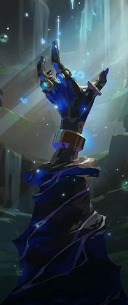

Em um dia qualquer, estava cortando cenoura no restaurante que eu trabalho em Seul, capital da Coréia do Sul, que inclusive, é meu país natal. Vejo no fundo uma explosão que futuramente seria chamada de Primeira Luz, e decido investigar as cidades afetadas!
Você começa sua jornada em Tóquio, a grande cidade cheia de outdoors e telas por todo canto, lá, você se encontra com um conhecido que se disponibilizou para ajudar na busca, seu nome, Kiritani Ryo, mais conhecido como Yoru.
Em Seul, você encontra Liam, apenas tomando sua cerveja após um dia de dupla identidade trabalhano na Kingdom, seu codinome, Brimstone. Ele tem muitas informações do que ocorreu, inclusive já havia contatado Yoru. Eles tem informações de que há pessoas cientes em outros lugares, por qual começar?
Yoru diz que sabe exatamente onde ir, você decide seguí-lo.
Você decide que a aventura é grande demais e volta para casa, mas sempre se pergunta o que teria encontrado.
Ao chegar no templo, você se depara com uma cópia de si mesmo, e fica confuso.
Na vila, vocês são atacados por locais que questionam suas intenções.
No templo você se encontra com Phoenix
de volta ao templo você encontra uma espada
seguí-lo te leva a uma emboscada com outros agentes da terra omega
Você recua
o artefato te escolhe
você sente uma aura te chamando